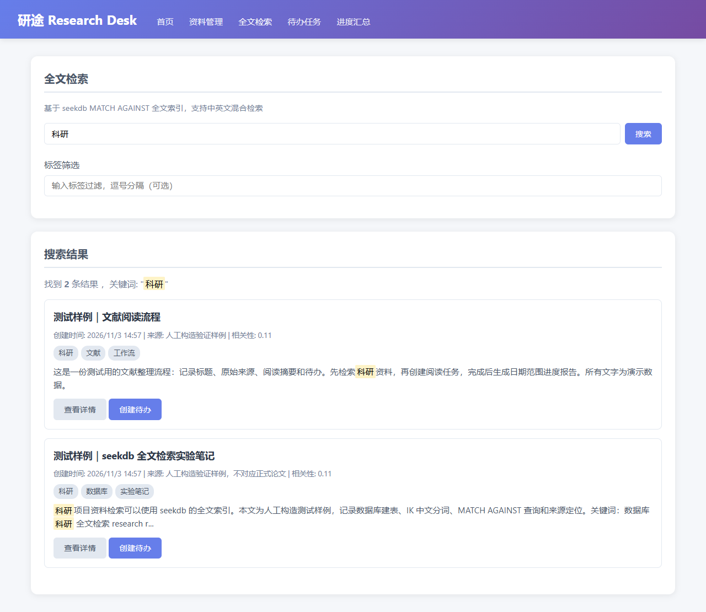
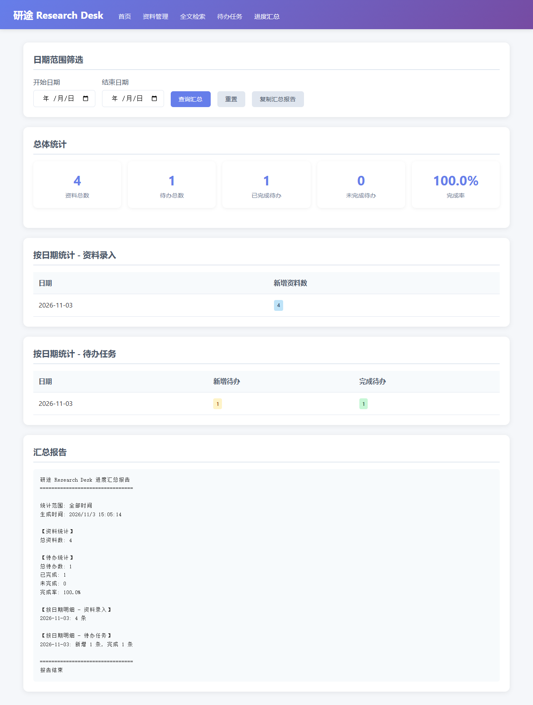

科研资料管理与任务协作平台，基于 seekdb 全文检索引擎驱动
科研工作者和项目管理者在日常工作中面临以下挑战：
论文、笔记、技术文档散落在各处，需要时难以快速定位。传统的文件夹管理方式效率低下，无法进行内容级别的检索。
待办事项与相关资料脱节，无法直观看到某个任务对应的参考资料。任务进度难以追踪和汇总。
普通数据库的 LIKE 查询无法满足中英文混合、语义相关的检索需求。缺乏相关性排序，难以找到最匹配的结果。
缺乏直观的统计和汇总工具，无法快速了解一段时间内的工作进展和完成情况。
支持标题、正文、来源、标签等信息录入，自动创建全文索引。支持 UTF-8 编码的中英文 Markdown/文本格式。
基于 seekdb MATCH AGAINST 全文索引，支持中英文混合检索。按相关性排序，支持标签组合筛选。
每条资料记录来源信息（论文、网站、书籍等），检索结果清晰展示出处，方便追溯原始资料。
创建待办任务并关联到具体资料，方便追踪后续工作。支持截止日期、完成状态管理。
按日期范围统计资料和待办数量，生成可复制的进度报告。直观展示工作进展和完成率。
所有 SQL 参数化防止注入，前端输入转义防止 XSS，明确的长度限制和错误提示。
MATCH(title, content) AGAINST(query IN NATURAL LANGUAGE MODE) 实现中英文混合检索%s 占位符，防止 SQL 注入FIND_IN_SET(tag, tags) 实现标签组合过滤从环境变量读取 seekdb 连接信息（主机、端口、用户名、密码、数据库名），不硬编码任何凭据。
自动创建 materials 和 todos 表，为 title 和 content 字段创建全文索引。
通过 POST /api/materials 接口录入资料，seekdb 自动为正文内容建立全文索引。
使用 MATCH AGAINST 语法执行全文检索，返回相关性评分和匹配结果。
支持全文检索和标签筛选的组合查询，使用参数化 SQL 防止注入。
所有数据保存在 seekdb 中，应用重启后数据仍可读取，支持长期存储和管理。
以下截图来自连接真实 seekdb 的本机应用：搜索资料、显示来源、创建关联待办并生成报告。展示站提供项目说明和复现入口，公网访问不会连接本机数据库。


63 项 HTTP/SQL 检查通过：真实 seekdb 5.7.25-OceanBase seekdb-v1.4.0.0；覆盖中英文检索、完整标签匹配、导入边界、任务状态、并发关联一致性、日期汇总，以及应用重启后读取；48,000 个中文与 emoji 字符也已实际写入并读回。
浏览器验证涵盖文件上传、任务创建与完成、来源详情、报告复制、手机视口和 HTML/引号边界。运行依据见 仓库验收证据。
没有提供真实用户效果统计或大赛正式评分；合成样例仅用于复现功能。日期统计按记录创建日期筛选，完成数反映这些任务的当前状态。
本项目源码托管在 GitHub：
主要后端与界面由 Qoder CN CLI 1.1.81 实际开发；Codex 负责需求整理、审查修复、独立验收和交付整理。真实 Qoder 会话标识、开发事件和日志校验值保留于仓库，供赛事核验。